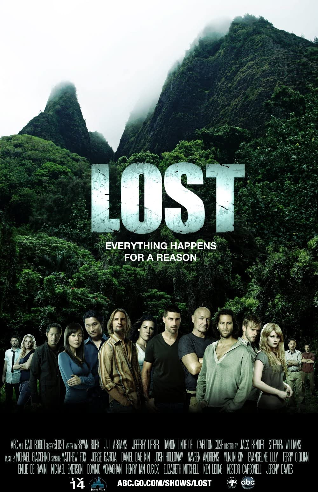

Ahmet Konuk
Hakkımda
Merhaba ben Ahmet Konuk. Ankara'lıyım, son 7 senedir Konya'da yaşıyorum. Amerikan dizileri izlemeyi çok seviyorum, en sevdiğim dizi LOST. Konya'da web geliştiricisi olarak çalışıyorum.
İlgi Alanlarım
- Film
- Dizi
- Kitap
- Cerrah - Tess Gerritsen
- İşte Böyle Buyurdu Zerdüşt - Friedrich Nietzsche
- Sherlock Holmes: Aklın Şüphesi Suçun Gerçeğidir - Arthur Conan Doyle
Sevdiğim Diziler:
LOST
